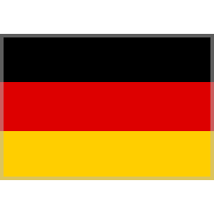

Historia


Campeones
Multicampeones
-
Michael Schummacher. 
🆠1994, 1995, 2000, 2001, 2002, 2003, 2004.
-
Lewis Hamilton.

🆠2008, 2014, 2015, 2017, 2018, 2019, 2020.
7 Titulos mundiales.
-
Juan Manuel Fangio.

🆠1951, 1954, 1955, 1956, 1957.
5 Titulos mundiales.
Tetracampeones
-
Alain Prost.

🆠1985, 1986, 1989, 1993.
-
Sebastian Vettel.
🆠2010, 2011, 2012, 2013.
-
Max Verstappen.

🆠2021, 2022, 2023, 2024.
4 Titulos mundiales.
Tricampeones
-
Jack Brabham.
🆠1959, 1960, 1966.
-
Jackie Stewart.
🆠1969, 1971, 1973.
-
Niki Lauda.

🆠1975, 1977, 1984.
-
Nelson Piquet.

🆠1981, 1983, 1987.
-
Ayrton Senna.
🆠1988, 1990, 1991.
3 Titulos mundiales.
Bicampeones
-
Alberto Ascari.

🆠1952, 1953.
-
Jim Clark.
🆠1963, 1965.
-
Graham Hill.
🆠1962, 1968.
-
Emerson Fittipaldi.
🆠1972, 1974.
-
Mika Häkkinen.

🆠1998, 1999.
-
Fernando Alonso.

🆠2005, 2006.
2 Titulos mundiales.
Monocampeones
- Giuseppe Farina.
🆠1950.
- Mike Hawthorn.
🆠1958.
- Phil Hill.

🆠1961.
- John Surtees.
🆠1964.
- Denny Hulme.

🆠1967.
- Jochen Rindt.
🆠1970.
- James Hunt.
🆠1976.
- Mario Andretti.
🆠1978.
- Jody Scheckter.

🆠1979.
- Alan Jones.

🆠1980.
- Keke Rosberg.
🆠1982.
- Nigel Mansell.
🆠1992.
- Damon Hill.
🆠1996.
- Jacques Villeneuve.

🆠1997.
- Kimi Räikkönen.
🆠2007.
- Jenson Button.
🆠2009.
- Nico Rosberg.
🆠2016.